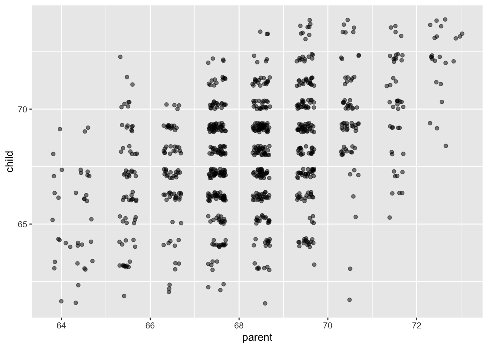
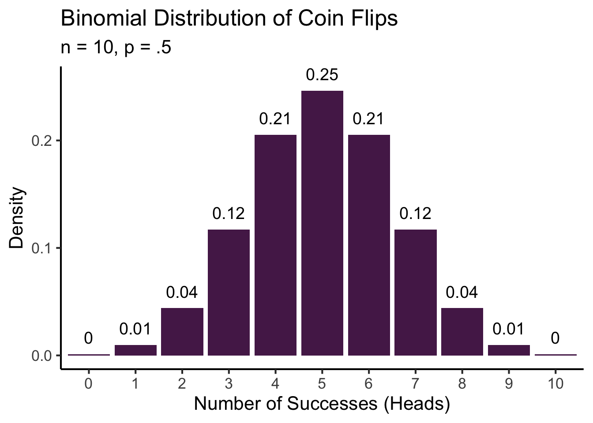
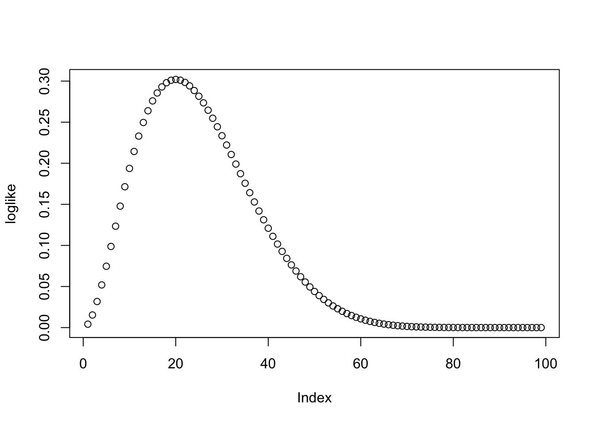
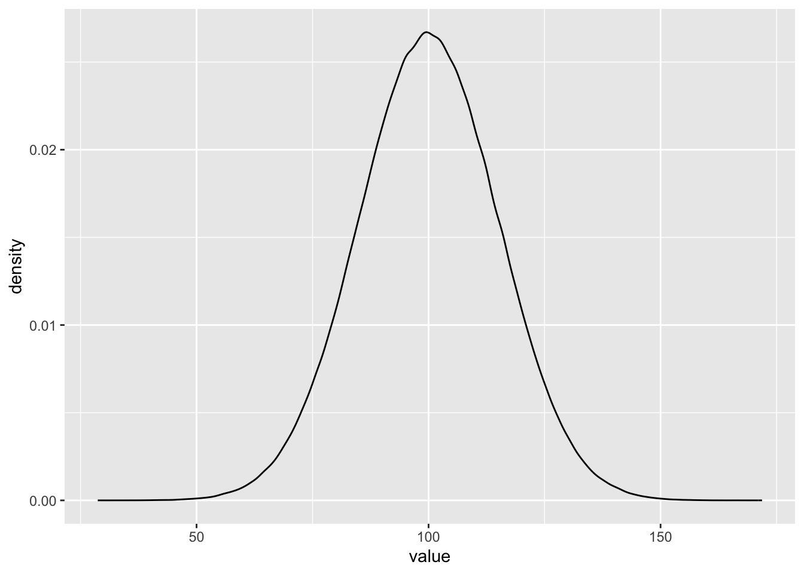
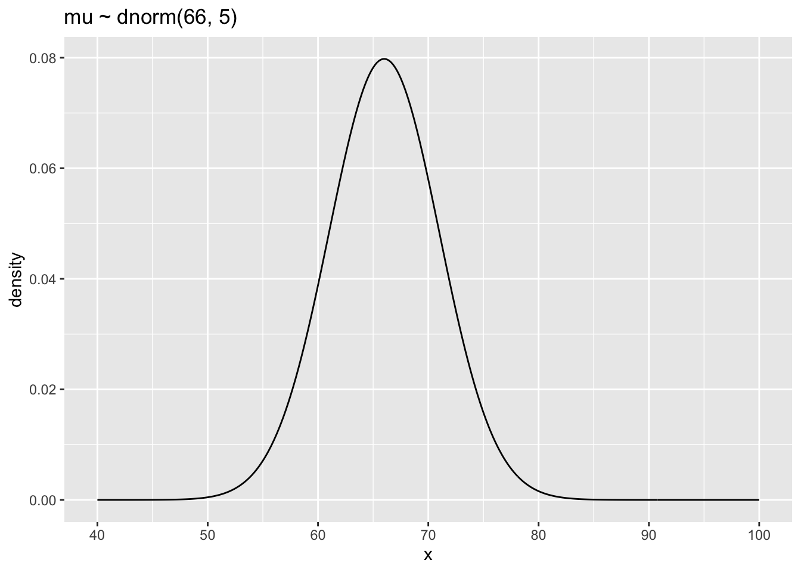
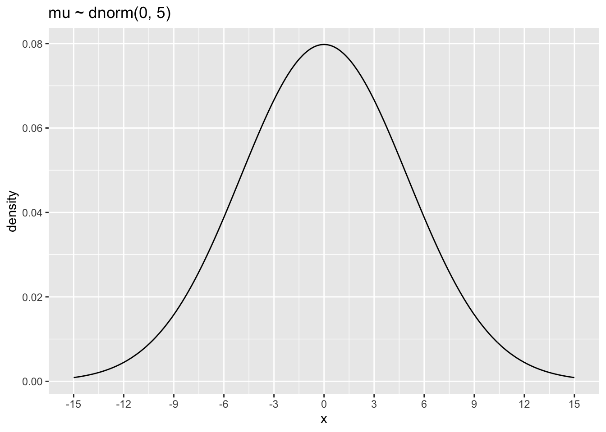
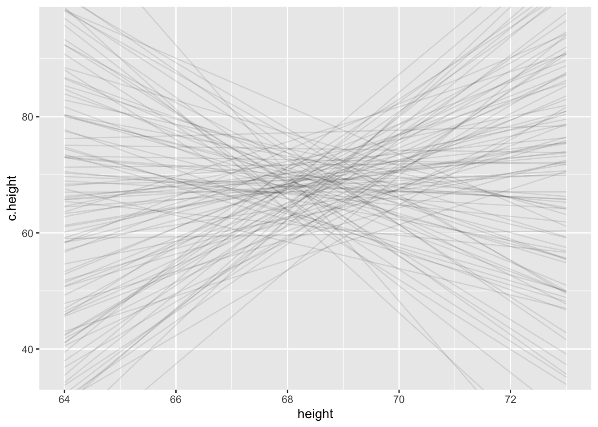
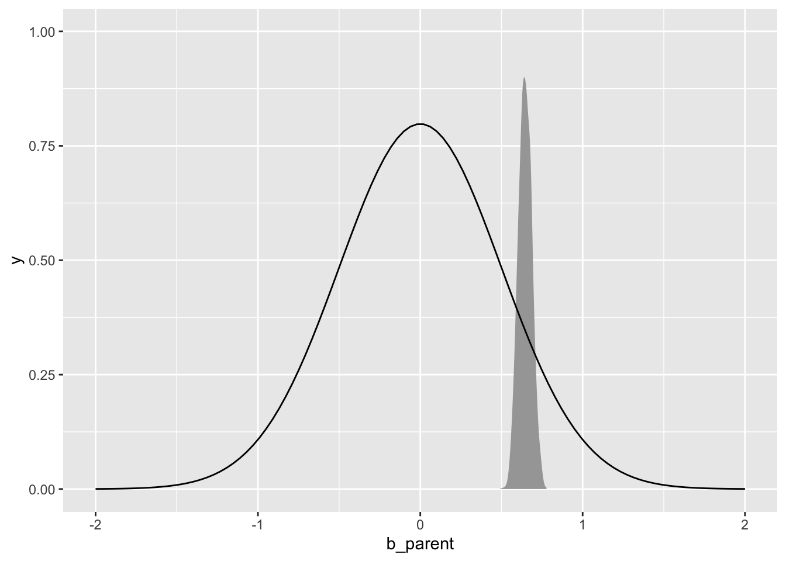
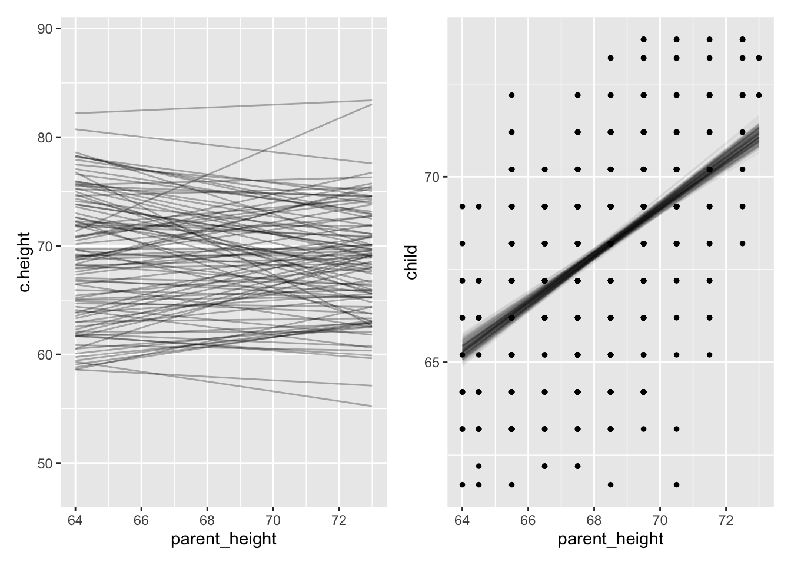

Our good friend that gives us 99% of the models psychologists use (general(ized) linear model), is exactly the same
\[\Large Y = b_{0} + b_{1}X +e\] - No need to think about setting up new t-test, ANOVAS, regressions, etc. ALL THE SAME.
A working mental model
What are Bayesian models?
“Normal” regression with a different algorithm.
Results that represent a distribution rather than a point estimate and some uncertainty.
Priors that incorporate existing knowledge.
1. Be comfortable with a different estimation algorithm
What do you mean by estimation algorithm?
OLS i.e. \(min\sum(Y_{i}-\hat{Y})^{2}\)
Fun fact, R uses QR decomposition, Newton Raphson, Fisher Scoring, SVR, etc – not this equation.
Another fun fact, more advanced stats use an even different algorithm (e.g., maximum likelihood)
Standard way
Code
library(tidyverse)
── Attaching core tidyverse packages ──────────────────────── tidyverse 2.0.0 ──
✔ dplyr 1.1.4 ✔ readr 2.1.5
✔ forcats 1.0.0 ✔ stringr 1.5.1
✔ ggplot2 3.5.1 ✔ tibble 3.2.1
✔ lubridate 1.9.4 ✔ tidyr 1.3.1
✔ purrr 1.0.2
── Conflicts ────────────────────────────────────────── tidyverse_conflicts() ──
✖ dplyr::filter() masks stats::filter()
✖ dplyr::lag() masks stats::lag()
ℹ Use the conflicted package (<http://conflicted.r-lib.org/>) to force all conflicts to become errors
Code
galton.data <- psychTools::galton

Code
fit.1<-lm(child ~ parent, data = galton.data)summary(fit.1)
Call:
lm(formula = child ~ parent, data = galton.data)
Residuals:
Min 1Q Median 3Q Max
-7.8050 -1.3661 0.0487 1.6339 5.9264
Coefficients:
Estimate Std. Error t value Pr(>|t|)
(Intercept) 23.94153 2.81088 8.517 <2e-16 ***
parent 0.64629 0.04114 15.711 <2e-16 ***
---
Signif. codes: 0 '***' 0.001 '**' 0.01 '*' 0.05 '.' 0.1 ' ' 1
Residual standard error: 2.239 on 926 degrees of freedom
Multiple R-squared: 0.2105, Adjusted R-squared: 0.2096
F-statistic: 246.8 on 1 and 926 DF, p-value: < 2.2e-16
Fisher Scoring
Code
fit.1.g <-glm(child ~ parent, family = gaussian, data = galton.data)summary(fit.1.g)
Call:
glm(formula = child ~ parent, family = gaussian, data = galton.data)
Coefficients:
Estimate Std. Error t value Pr(>|t|)
(Intercept) 23.94153 2.81088 8.517 <2e-16 ***
parent 0.64629 0.04114 15.711 <2e-16 ***
---
Signif. codes: 0 '***' 0.001 '**' 0.01 '*' 0.05 '.' 0.1 ' ' 1
(Dispersion parameter for gaussian family taken to be 5.011094)
Null deviance: 5877.2 on 927 degrees of freedom
Residual deviance: 4640.3 on 926 degrees of freedom
AIC: 4133.2
Number of Fisher Scoring iterations: 2
Maximum likelihood
This is lavaan 0.6-19
lavaan is FREE software! Please report any bugs.
lavaan 0.6-19 ended normally after 1 iteration
Estimator ML
Optimization method NLMINB
Number of model parameters 3
Number of observations 928
Model Test User Model:
Test statistic 0.000
Degrees of freedom 0
Parameter Estimates:
Standard errors Standard
Information Expected
Information saturated (h1) model Structured
Regressions:
Estimate Std.Err z-value P(>|z|)
child ~
parent 0.646 0.041 15.728 0.000
Intercepts:
Estimate Std.Err z-value P(>|z|)
.child 23.942 2.808 8.527 0.000
Variances:
Estimate Std.Err z-value P(>|z|)
.child 5.000 0.232 21.541 0.000
Bayesian way
Code
library(brms)
Loading required package: Rcpp
Loading 'brms' package (version 2.22.0). Useful instructions
can be found by typing help('brms'). A more detailed introduction
to the package is available through vignette('brms_overview').
Attaching package: 'brms'
The following object is masked from 'package:stats':
ar
For execution on a local, multicore CPU with excess RAM we recommend calling
options(mc.cores = parallel::detectCores()).
To avoid recompilation of unchanged Stan programs, we recommend calling
rstan_options(auto_write = TRUE)
For within-chain threading using `reduce_sum()` or `map_rect()` Stan functions,
change `threads_per_chain` option:
rstan_options(threads_per_chain = 1)
Attaching package: 'rstan'
The following object is masked from 'package:tidyr':
extract
Family: gaussian
Links: mu = identity; sigma = identity
Formula: child ~ parent
Data: galton.data (Number of observations: 928)
Draws: 4 chains, each with iter = 2000; warmup = 1000; thin = 1;
total post-warmup draws = 4000
Regression Coefficients:
Estimate Est.Error l-95% CI u-95% CI Rhat Bulk_ESS Tail_ESS
Intercept 24.00 2.79 18.54 29.38 1.00 3554 3112
parent 0.65 0.04 0.57 0.73 1.00 3545 3112
Further Distributional Parameters:
Estimate Est.Error l-95% CI u-95% CI Rhat Bulk_ESS Tail_ESS
sigma 2.24 0.05 2.14 2.34 1.00 3880 3058
Draws were sampled using sample(hmc). For each parameter, Bulk_ESS
and Tail_ESS are effective sample size measures, and Rhat is the potential
scale reduction factor on split chains (at convergence, Rhat = 1).
Is made up of a series of educated guesses (via our algorithm), each of which is consistent with the data.
In aggregate, these guesses provide us not with a best guess and an SD (as with Maximum Likelihood), but a more complete sense of each parameter we are trying to estimate.
We can assume this distribution (typically normal) with standard estimation, but with bayes it can be flexible!
Posterior distribution (ie results)
Is made of up of a series of educated guesses. Each dot represents a particular guess. Guesses that occur more often are considered more likely.
Played a role in developing the thermonuclear bomb with one of the earliest computers. Published in 1953 but ignored within stats b/c it was published within a physics/chemistry journal. Took about until 1990 for desktop computers to run fast enough to do at home.
Many variants, but the general idea is a) propose an estimate value + noise N(0, \(\sigma\) ) then b) see how “likely” the data is given the estimate, c) based on some criteria (better than worse that some value) either accept or reject the estimate and d) repeat
What do you mean by likely?
You’ve done this before last semester. Three parameters in a binomial distribution (# successes, # of trials, probability of success). Often you would fix #trials and probability of success to see what # successes are most/least likely.
Code
data.frame(heads =0:10, prob =dbinom(x =0:10, size =10, prob = .5)) %>%ggplot(aes(x =factor(heads), y = prob)) +geom_col(fill ="#562457") +geom_text(aes(label =round(prob, 2), y = prob + .01),position =position_dodge(.9),size =5, vjust =0) +labs(title ="Binomial Distribution of Coin Flips",subtitle ="n = 10, p = .5",x ="Number of Successes (Heads)",y ="Density") +theme_classic(base_size =16)

But we often don’t know what P is. That is the parameter we want to estimate. But we collected data! So we can look at what p is consistent (or not) with our data (2 successes in 10 trials).
This is basically what our current ML algorithms do.
Code
p <-seq(0.01, 0.99, by =0.01)loglike <-dbinom(2, size =10, prob = p)plot(loglike)

The Bayesian (MCMC) algorithm tries out a bunch of parameter values. The one’s that are more likely will appear more often.
What do I mean “appear” more often. The algorithm lands on that just as our coin flipping example finds .2 to be most likely.
Think of the algorithm as picking out marbles from a sack, with replacement, to figure out the distribution of colors.
Or us doing rnorm with me hiding what the mean and SD are, but then figuring out what the mean and SD are through counting the samples.
Code
sack <-as_tibble(rnorm(1000000, mean =100, sd =15))ggplot(sack, aes(x=value)) +geom_density()

Bayesian analysis is just counting
Bayesian analysis counts all ways that something can happen (according to assumptions/model). Assumptions with more ways that are consistent with data are more plausible.
This method is not demonstrably different than standard approaches. Standard likelihood approaches use the values that are most consistent with the data as an estimate. Try out all possible numbers and then tells you which one is most likely.
Where Bayes differs, is we will focus beyond just a “best estimate”
Visualizing uncertainty
Our posterior (ie different educated guesses at a the correct parameters; distribution of plausible values) is highlighting: that there is no ONE result, that there are many possible results that are consistent with the data.
Do not need to assume normal or multivariate normal. Uncertainty does not need to be even tailed.
Differences (say across groups) in uncertainty is allowed. Do not need to assume groups have same standard errors. One can better account for and/or probe situations where a certain group has a lot or little variability.
Easy to calculate uncertainty
CIs around a particular value
With your current knowledge, calculate a 95% CI around parent = 72 inches, to tell you what is possible for the sample mean at that hight.
Priors insert knowledge you have outside of your data into your model
This can seem “subjective” as opposed to the more “objective” way of letting the data speak.
We will mostly not “tip the scales” towards an outcome we want.
Most of the time the prior knowledge constrains plausible or implausible range of values e.g. we know an effect size of a million is very unlikely.
Often priors don’t matter…
Take our height example where we are fitting \(\Large Child = b_{0} + b_{1}Parent +e\)
We need to put priors on each parameter we want to estimate, here \(b_{0}\) & \(b_{1}\) (and e).
\(b_{0}\) is the intercept and reflect average child height when parent height is centered.
We know, roughly, what average height of adults are so we can create a distribution, say ~N(66 (5.5 ft), 5). That means we are pretty sure (95%) the average height is between ~4’8 and 6`4
Code
p.0<-tibble(x =seq(from =40, to =100, by = .1)) %>%ggplot(aes(x = x, y =dnorm(x, mean =66, sd =5))) +geom_line() +scale_x_continuous(breaks =seq(from =40, to =100, by =10)) +labs(title ="mu ~ dnorm(66, 5)",y ="density")p.0

We could argue that the \(b_{1}\) parameter (which indexes the strength of association between parent and child height) is positive. But we don’t want to stack the deck.
Let’s center it around zero, saying that the most plausible estimate is no association, but that we are willing to entertain some strong effects in either direction.
Code
p.1<-tibble(x =seq(from =-15, to =15, by = .1)) %>%ggplot(aes(x = x, y =dnorm(x, mean =0, sd =5))) +geom_line() +scale_x_continuous(breaks =seq(from =-15, to =15, by =3)) +labs(title ="mu ~ dnorm(0, 5)",y ="density")p.1

Okay so what does this mean?
It means, BEFORE WE SEE THE DATA we are comfortable with different regression lines.

Okay so why is this important?
A model that makes impossible predictions prior to seeing the data isn’t too useful. Why waste the effort? We often know what values are likely, given what we know about effect sizes
This is exactly what we do with standard “frequentist” methods. They have implicit priors such that all values, from negative infinity to positive infinity are equally likely.
If we use priors from a uniform distribution we will get the EXACT same results as a frequentist method.
Tying it together
Be comfortable with a different estimation algorithm
Think of results in terms of distributions
Be comfortable integrating prior knowledge
\[p(\theta | data) \propto \frac{p(data | \theta) \times p(\theta )}{p(data)}\] P(θ|data) is the posterior probability.
P(θ) is the prior probability.
p(data| \(\theta\) ) is the likelihood.
p(data) can be ignored, it is just a normalized coefficient
fit.1.bayesian %>%spread_draws(b_Intercept, b_parent) %>%ggplot(aes(x = b_parent)) +stat_slab() +stat_function(data =data.frame(x =c(-2, 2)), aes(x), fun = dnorm, n =100, args =list(0, .5))

Going from prior to posterior
plusible lines prior to data –> plausible lines after data

What is confusing:
Is it a philosophical different frame work? We can talk about how it is p(H0|d) vs p(d|H0) but it really doesn’t matter. Become a Bayesian just means using the algorithm, and again, most of us don’t have strong algo preferences
Technically we don’t have P-values, but Bayesian has analogues. Technically there isn’t NHST (because no null distribution to create sampling distribution) but you can easily do it.
Why don’t we do this already? Isn’t frequentist better? Historical accident due to computation limitations
Bayes Factors. Mostly garbage (imho) as they can be easily manipulated. But they have their place. BFs =/= Bayesian.